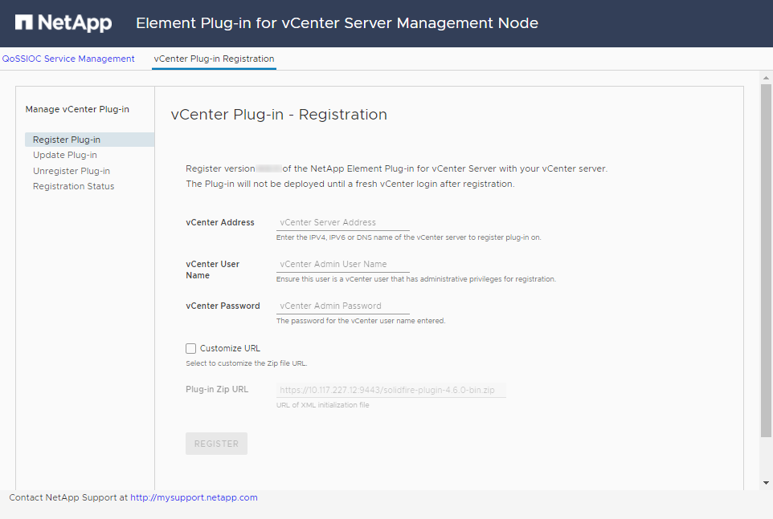

Release Notes
Release Notes
Install and configure Element Plug-in 4.10 and earlier
 Suggest changes
Suggest changes
You can install NetApp Element Plug-in for VMware vCenter Server 4.10 or earlier directly to your vCenter and access the plug-in with the vSphere Web Client.
After installation is complete, you can use the quality of service based on storage I/O control (QoSSIOC) service as well as other services of the vCenter Plug-in.
Read and complete each step to install and begin using the plug-in:
Prepare for installation
Before you begin the installation, review pre-deployment requirements.
Install the management node
You can manually install the management node for your cluster running NetApp Element software using the appropriate image for your configuration.
This manual process is intended for SolidFire all-flash storage administrators and NetApp HCI administrators who are not using the NetApp Deployment Engine for management node installation.
Register the plug-in with vCenter
Deploying the vCenter Plug-in package in the vSphere Web Client involves registering the package as an extension on vCenter Server. After registration is complete, the plug-in is available to any vSphere Web Client that connects to your vSphere environment.
-
For vSphere 6.5 and 6.7, ensure you have logged out of the vSphere Web Client. The web client for these versions will not recognize updates made during this process to your plug-in if you do not log out. For vSphere 7.0, you do not need to log out of the web client.
-
You have vCenter Administrator role privileges to register a plug-in.
-
You have deployed a management node OVA running Element software 11.3 or later.
-
Your management node is powered on with its IP address or DHCP address configured.
-
You are using an SSH client or web browser (Chrome 56 or later or Firefox 52 or later).
-
Your firewall rules allow open network communication between the vCenter and the storage cluster MVIP on TCP ports 443, 8443, and 9443. Port 9443 is used for registration and can be closed after registration is complete. If you have enabled virtual volumes functionality on the cluster, ensure TCP port 8444 is also open for VASA provider access.
You must register the vCenter Plug-in on every vCenter Server where you need to use the plug-in.
For Linked Mode environments, the plug-in must be registered with each vCenter Server in the environment to keep MOB data in sync and to be able to upgrade the plug-in. When a vSphere Web Client connects to a vCenter Server where your plug-in is not registered, the plug-in is not visible to the client.

|
Using NetApp Element Plug-in for vCenter Server to manage cluster resources from other vCenter Servers using vCenter Linked Mode is limited to local storage clusters only. |
-
Enter the IP address for your management node in a browser, including the TCP port for registration:
https://<managementNodeIP>:9443The registration UI displays the Manage QoSSIOC Service Credentials page for the plug-in.

-
Optional: Change the password for the QoSSIOC service before registering the vCenter Plug-in:
-
For the Old Password, enter the current password of the QoSSIOC service. If you have not yet assigned a password, type the default password:
solidfire -
Select Submit Changes.
After you submit changes, the QoSSIOC service automatically restarts.
-
-
Select vCenter Plug-in Registration.

-
Enter the following information:
-
The IPv4 address or the FQDN of the vCenter service on which you will register your plug-in.
-
The vCenter Administrator user name.
The user name and password credentials you enter must be for a user with vCenter Administrator role privileges. -
The vCenter Administrator password.
-
(For in-house servers/dark sites) A custom URL for the plug-in ZIP.
Most installations use the default path. To customize the URL if you are using an HTTP or HTTPS server (dark site) or have modified the ZIP file name or network settings, select Custom URL. For additional steps if you intend to customize a URL, see Modify vCenter properites for a dark site HTTP server.
-
-
Select Register.
-
(Optional) Verify registration status:
-
Select Registration Status.
-
Enter the following information:
-
The IPv4 address or the FQDN of the vCenter service on which you are registering your plug-in
-
The vCenter Administrator user name
-
The vCenter Administrator password
-
-
Select Check Status to verify that the new version of the plug-in is registered on the vCenter Server.
-
-
(For vSphere 6.5 and 6.7 users) Log in to the vSphere Web Client as a vCenter Administrator.
This action completes the installation in the vSphere Web Client. If the vCenter Plug-in icons are not visible from vSphere, see troubleshooting documentation. -
In the vSphere Web Client, look for the following completed tasks in the task monitor to ensure installation has completed:
Download plug-inandDeploy plug-in.
Modify vCenter properties for a dark site HTTP server
If you intend to customize a URL for an in-house (dark site) HTTP server during vCenter Plug-in registration, you must modify the vSphere Web Client properties file webclient.properties. You can use vCSA or Windows to make the changes.
Permissions to download software from the NetApp Support Site.
-
SSH into the vCenter Server:
Connected to service * List APIs: "help api list" * List Plugins: "help pi list" * Launch BASH: "shell" Command> -
Enter
shellin the command prompt to access root:Command> shell Shell access is granted to root
-
Stop the VMware vSphere Web Client service:
service-control --stop vsphere-client service-control --stop vsphere-ui
-
Change the directory:
cd /etc/vmware/vsphere-client
-
Edit the
webclient.propertiesfile and addallowHttp=true. -
Change the directory:
cd /etc/vmware/vsphere-ui
-
Edit the
webclient.propertiesfile and addallowHttp=true. -
Start the VMware vSphere Web Client service:
service-control --start vsphere-client service-control --start vsphere-ui
After you have completed the registration procedure, you can remove allowHttp=truefrom the files you modified. -
Reboot vCenter.
-
Change the directory from a command prompt:
cd c:\Program Files\VMware\vCenter Server\bin
-
Stop the VMware vSphere Web Client service:
service-control --stop vsphere-client service-control --stop vsphere-ui
-
Change the directory:
cd c:\ProgramData\VMware\vCenterServer\cfg\vsphere-client
-
Edit the
webclient.propertiesfile and addallowHttp=true. -
Change the directory:
cd c:\ProgramData\VMware\vCenterServer\cfg\vsphere-ui
-
Edit the
webclient.propertiesfile and addallowHttp=true. -
Change the directory from a command prompt:
cd c:\Program Files\VMware\vCenter Server\bin
-
Start the VMware vSphere Web Client service:
service-control --start vsphere-client service-control --start vsphere-ui
After you have completed the registration procedure, you can remove allowHttp=truefrom the files you modified. -
Reboot vCenter.
Access the plug-in and verify successful installation
After successful installation or upgrade, NetApp Element Configuration and Management extension points appear in the Shortcuts tab of the vSphere Web Client and in the side panel.
|
|
If the vCenter Plug-in icons are not visible, see the troubleshooting documentation. |
Add storage clusters for use with the plug-in
You can add a cluster running Element software using the NetApp Element Configuration extension point so that it can be managed by the plug-in.
After a connection has been established to the cluster, the cluster can then be managed using the NetApp Element Management extension point.
-
At least one cluster must be available and its IP or FQDN address known.
-
Current full Cluster Admin user credentials for the cluster.
-
Firewall rules allow open network communication between the vCenter and the cluster MVIP on TCP ports 443 and 8443.
|
|
You must add at least one cluster to use the NetApp Element Management extension point functions. |
This procedure describes how to add a cluster profile so that the cluster can be managed by the plug-in. You cannot modify cluster administrator credentials using the plug-in.
See managing cluster administrator user accounts for instructions on changing credentials for a cluster administrator account.

|
The vSphere HTML5 web client and Flash web client have separate databases that cannot be combined. Clusters added in one client will not be visible in the other. If you intend to use both clients, add your clusters in both. |
-
Select NetApp Element Configuration > Clusters.
-
Select Add Cluster.
-
Enter the following information:
-
IP address/FQDN: Enter the cluster MVIP address.
-
User ID: Enter a cluster administrator user name.
-
Password: Enter a cluster administrator password.
-
vCenter Server: If you set up a Linked Mode group, select the vCenter Server you want to access the cluster. If you're not using Linked Mode, the current vCenter Server is the default.
-
The hosts for a cluster are exclusive to each vCenter Server. Be sure that the vCenter Server you select has access to the intended hosts. You can remove a cluster, reassign it to another vCenter Server, and add it again if you decide later to use different hosts.
-
Using NetApp Element Plug-in for vCenter Server to manage cluster resources from other vCenter Servers using vCenter Linked Mode is limited to local storage clusters only.
-
-
-
Select OK.
When the process completes, the cluster appears in the list of available clusters and can be used in the NetApp Element Management extension point.
Configure QoSSIOC settings using the plug-in
You can set up automatic quality of service based on Storage I/O Control (QoSSIOC) for individual volumes and datastores controlled by the plug-in. To do so, you configure QoSSIOC and vCenter credentials that will enable the QoSSIOC service to communicate with vCenter.
After you have configured valid QoSSIOC settings for the management node, these settings become the default. The QoSSIOC settings revert to the last known valid QoSSIOC settings until you provide valid QoSSIOC settings for a new management node. You must clear the QoSSIOC settings for the configured management node before setting the QoSSIOC credentials for a new management node.
-
Select NetApp Element Configuration > QoSSIOC Settings.
-
Select Actions.
-
In the resulting menu, select Configure.
-
In the Configure QoSSIOC Settings dialog box, enter the following information:
-
mNode IP Address/FQDN: The IP address of the management node for the cluster that contains the QoSSIOC service.
-
mNode Port: The port address for the management node that contains the QoSSIOC service. The default port is 8443.
-
QoSSIOC User ID: The user ID for the QoSSIOC service. The QoSSIOC service default user ID is admin. For NetApp HCI, the user ID is the same one entered during installation using the NetApp Deployment Engine.
-
QoSSIOC Password: The password for the Element QoSSIOC service. The QoSSIOC service default password is
solidfire. If you have not created a custom password, you can create one from the registration utility UI (https://[management node IP]:9443). -
vCenter User ID: The user name for the vCenter admin with full Administrator role privileges.
-
vCenter Password: The password for the vCenter admin with full Administrator role privileges.
-
-
Select OK.
The QoSSIOC Status field displays
UPwhen the plug-in can successfully communicate with the service.
See this KB to troubleshoot if the status is any of the following:
-
Down: QoSSIOC is not enabled. -
Not Configured: QoSSIOC settings have not been configured. -
Network Down: vCenter cannot communicate with the QoSSIOC service on the network. The mNode and SIOC service might still be running.
After the QoSSIOC service is enabled, you can configure QoSSIOC performance on individual datastores.
-
Configure user accounts
To enable access to volumes, you'll need to create at least one user account.
Create datastores and volumes
You can create datastores and Element volumes to start allocating storage.